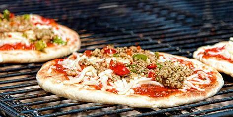

PIZZA A LA PARRILLA COSTERA
Ir a Google Argentina
Ir a la pagina de contactos

Recomendaciones generales para realizar la pizza
Antes de empezar tenemos que asegurarnos una serie de cosas. Al horno es mucho más sencillo porque encendemos el horno, estiramos la masa sobre una placa y listo. A la parrilla tenemos que asegurarnos de tener los fierros bien limpios, al igual que en una placa, aceitar los fierros, calentar bien la parrilla al inicio y luego bajar el fuego, para que no se nos queme la pizza y el último tip, cocinar de un lado unos minutos y luego dar vuelta y esparcirle los ingredientes por encima.
Ingredientes
- 1 kg de Harina
- 50 gr de levadura fresca
- 2 cucharadas de sal
- 3 cucharadas de aceite de oliva
- 500 cc de agua tibia
- 1 diente de ajo
- Puré o Salsa de tomate
- Queso cremoso
- Oregano, pimienta a gusto. Ingredientes para sumar
Elaboración de la masa
- Poner en un bowl la harina y la sal
- Activar la levadura en un vaso con un chorro de agua tibia. Luego agregar sobre la harina y comenzar a mezclar los ingredientes
- Incorporar el aceite y de a poco el agua tibia cantidad necesaria, según necesite la masa
- Amasar hasta que tenga una consistencia lisa, pero más dura que una pizza tradicional
- Dejar leudar unos 30/35 minutos hasta que duplique su volumen
- Para cocinar la parrilla tiene que estar bien caliente, mojar con un poco de aceite de oliva los fierritos de nuestra parrilla y poner la masa encima, debe quedar fina pero que sea fácil de manipular
- Recordamos que la cocción sea rápida, para que no se nos queme. Dar vuelta e incorporar los ingredientes para nuestra variedad, recordar que lo mejor es que al momento de agregar los ingredientes es importante que tras darla vuelta luego la mozzarella rallada por encima
Preparación de las salsas
La cantidad de ingredientes va de la mano de las preparaciones que haremos, pero acá va la receta para cuatro pizzas. Picamos un diente de ajo, lo ponemos en una sartén con un chorrito de aceite a fuego bajo, que no se nos queme, (si esto sucede descartarlo y comenzar de nuevo porque el ajo quemado le da mal sabor). Abrimos el pure de tomates y lo agregamos a la sartén. Cocinamos hasta que hierva, le agregamos como condimentos sal, pimienta y orégano. Nada más.
Acto seguido cortar en fetas el queso, y agregar y esperar de 5 a 10 minutos hasta que se derrita. Opciones que usualmente se usan para decorar son: rúcula, huevo hervido, fetas de jamón, o el clásico provenzal.